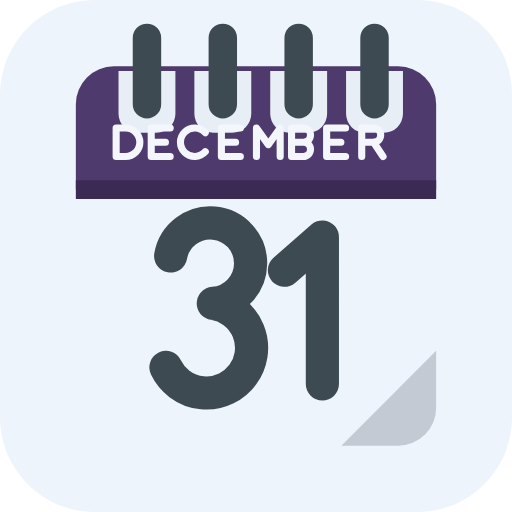

Boox Calendar
Calendario, recordatorios y notas a mano en una sola app para tabletas de tinta electrónica Onyx Boox, sincronizada con tu cuenta de Google.
Descargar la última versión (APK)
Código en GitHub
Qué hace
- Calendario de Google con vistas de mes, semana y día, y creación rápida de eventos.
- Recordatorios de Google Tasks, también dentro del calendario, con listas y vencimientos.
- Notas a mano con el lápiz de la tablet: nota rápida del día, cuaderno con carpetas y etiquetas, reconocimiento de escritura en el dispositivo y búsqueda por texto.
- Notas en Google Drive, como PDF editable, en una carpeta propia de la app. Importa PDF de otras apps (OneNote, escaneos) y búscalos por su texto.
- Widgets para el escritorio: hoy, semana, agenda, notas del día y búsqueda.
- Diseñada para tinta electrónica: blanco y negro, sin animaciones, refrescos mínimos.
Instalar
- Descarga el APK de la última versión desde el navegador de la tablet.
- Si BooxOS pregunta, permite instalar apps de fuentes desconocidas para el navegador.
- Abre la app → Ajustes → Conectar mi cuenta de Google. Se abre el navegador; elige tu cuenta y acepta los permisos de Calendario, Tareas y Drive (solo los archivos de la app).
- Excluye la app de la optimización de energía de BooxOS para que sincronice en segundo plano; la propia app te lo recuerda.
Privacidad
Tus datos están solo en tu tablet y en tu cuenta de Google. No hay servidores de terceros, ni analítica, ni publicidad. Detalles en la política de privacidad.